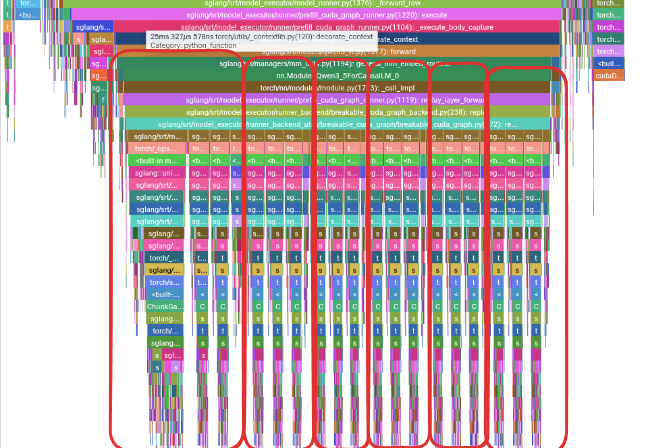
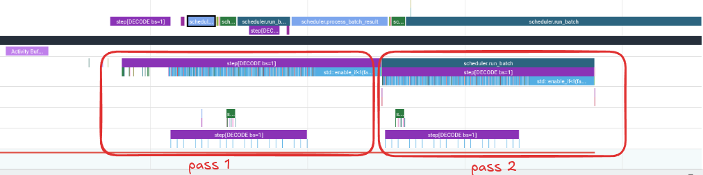
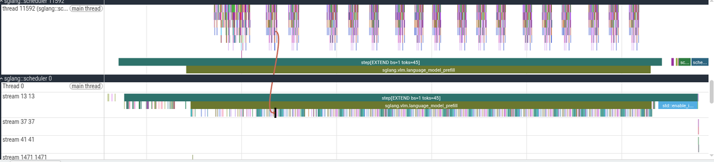
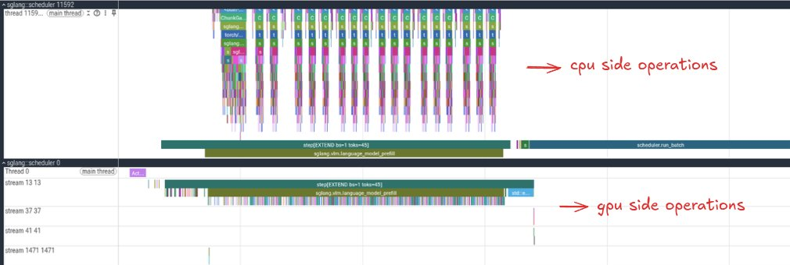

生产环境里喂一个LLM服务时，CPU侧和GPU侧各自在忙什么？本文用SGLang自带的Torch Profiler集成对单个请求做启动-剖析-回放，把prefill和decode的每个内核、每次拷贝、每段同步摊开在Perfetto trace里，训练读trace的直觉。
目标是能认出重复峰值里的GDN/全注意力块，看懂batch=1 decode里瘦长GEMV背后的带宽瓶颈，并从张量形状推断内核为何如此选择。基于单张NVIDIA L4 GPU上的Qwen3.5-0.8B，低配机器也能跟做。
在打开剖析器之前，先了解我们预期会看到哪些模式/层会很有帮助。对于本次运行，重要的模型统计信息如下：
参数0.8B · 隐藏维度1024 · 嵌入维度248k · 层数24 · 上下文长度262k tokens
Qwen3.5-0.8B采用6组 (Gated DeltaNet + FFN) 后接1个 (Gated Attention + FFN) 的重复结构：这个分组会直接印在trace的峰值形态里。
使用bf16时，权重大约占用1.6 GB。
0.8B parameters * 2 bytes = 1.6 GB
对batch size为1的解码，可以先做一次数学roofline检查，预判会遇到哪类瓶颈：
memory bandwidth for my gpu = 300 GB/s weights to move per token = 1.6 GB bandwidth-limited throughput ≈ 300/1.6 = 187 tokens/s
计算上限远高于带宽上限，因此初始假设是：batch=1的decode瓶颈更接近内存受限而非计算受限。
现在利用profiling端点来记录CPU和GPU活动，并把prefill和decode分离为两个trace，便于阅读。
这里设置等待5步（warmup），然后对后续2步进行剖析。剖析器在decode期间捕获了两次前向传播。
curl -X POST http://127.0.0.1:30000/start_profile \ -H "Content-Type: application/json"
随后通过serving benchmark发送单个请求。
python -m sglang.bench_serving --backend sglang --num-prompts 1
另外要记住，CUDA启动是异步的：CPU时间线上可能先显示内核启动，而实际内核稍后才在GPU时间线上运行。因此读trace时主要先看CPU端启动，再看GPU端执行。
要查看trace，打开Perfetto UI并加载剖析后生成的trace文件（https://ui.perfetto.dev/）。
这是我们单个请求的完整prefill区域。Prefill是模型消耗提示词token并生成单个token的阶段。剖析器上半部分是CPU侧操作，下半部分是GPU侧操作。
你能发现第一个模式吗？峰值分成3组，中间夹着一个小峰值；更显眼的是第一个峰值比其他峰值大得多。记住这点，下面会逐一揭示每个特征。
滚动到最左侧那个较小的峰值并放大，会看到大量初始化工作：启动torch profiler、sglang准备输入批次、设置CUDA流。

另一个功能是，想知道某个CPU活动启动了哪个内核，点击该操作会跳转到它启动的具体内核并附带信息。scheduler会先准备请求、启动剖析、设置流并构建批次。


这种情况下能看到从固定CPU内存到GPU的主机到设备拷贝，可能是请求元数据、token ID或调度器需要的某个小张量。
现在位于主prefill计算区域内。回想缩小的整体视图，这些重复的峰值成组出现、并非随机：这与模型的重复分组结构完全吻合。

Qwen3.5-0.8B有6个重复组，每组是3个Gated DeltaNet块后接1个全注意力块，因此在profiler中期待看到：
[GDN + FFN] [GDN + FFN] [GDN + FFN] [Attention + FFN] [GDN + FFN] [GDN + FFN] [GDN + FFN] [Attention + FFN] ... 重复6次
现在放大第一个峰值，看看其中在执行哪些操作。第一个峰值稍大，因为它包含额外的初始化和索引/复制工作（第一个混合块的设置开销）。

接着滚动到接下来的两个峰值，以及第一组内较小的峰值：它们与GDN块和较小的全注意力块对应。

这些是GDN块，包含如下内核：causal_conv1d_fn、fused_qkv_split_gdn_prefill、fused_gdn_gating、ChunkGatedDeltaRuleFunction、l2norm_fwd、chunk_local_cumsum、chunk_gated_delta_rule_fwd_kkt_solve、recompute_w_u_fwd、chunk_gated_delta_rule_fwd_h、chunk_fwd_kernel_o。
你还可以通过点击GPU部分中的内核来验证这一点。较小的第四个峰值是使用FlashInfer的全注意力块；对只有45个token的短提示词而言，全注意力其实不是瓶颈。

模式提醒！在内核部分能看到重复的绿色粗条，最后是一个大的蓝色内核。记住这点，下一节会用到。
越过所有重复的峰值进入最后一段，服务器进入清理阶段并为解码做准备：最终投影到logits、采样、把结果复制回CPU。这一步易被忽略，但很关键。

如果点击CPU端的aten::mm并展开参数，PyTorch会显示：Input type: [BFloat16, BFloat16]，Input strides: [[1024,1],[1,1024]]。从概念上讲就是 [1, 1024] @ [1024, 248320] = [1, 248320]。
由于词表规模巨大，这变成一个大型矩阵向量式投影（GEMV）。尽管本次prompt的prefill期间只运行一次，它仍是该部分最慢的内核之一。

内核细节也值得阅读：grid: [31040, 1, 1] block: [8, 8, 1]。网格形状31040 = 248320词表元素 / 8，即最终线性头把一个1024宽隐藏向量投影到巨型词表。若要优化这条路径，可研究该投影能否融合。
下面来看此工作负载中运行的最突出的内核。最后的gemv内核虽仅调用一次，但确实是最昂贵的；128x128 BF16 GEMM出现24次，与每个块一次大型投影式操作吻合；较小的CUTLASS BF16 GEMM出现18次，对应18个注意力块。

仅凭内核名称有时会显得嘈杂，结合模型布局和数据流来理解，会让trace更容易分析。
解码是与预填充不同的工作负载：预填充处理整个提示序列、有足够算量成为像样的GEMM；解码批次更小，模型多是一次处理一个新token，大量投影收缩成瘦长的矩阵向量运算。

此trace中高亮区域是关键。周围是profiler启动/关闭、输入设置、同步和簿记：值得理解，但不是主要计算路径。
左侧，SGLang加载批次并把此decode步骤的输入复制到固定的CUDA graph缓冲区，中间是实际decode工作。与prefill不同，CPU时间线不逐层显示（decode被CUDA graph捕获）。

graph replay之前有一些设置内核和小复制：它们不是层堆栈，主要是在准备捕获图所需的固定缓冲区和执行状态。

点击进入graph replay区域后，GPU内核在该replay下方可见，这是对decode至关重要的视图。

重复出现的蓝色条柱与vocab projection周围的GEMV家族相同。decode阶段它们不断出现，因为batch=1时许多线性层都变成瘦长矩阵向量运算。

这是核心性能问题：GEMV算术强度远低于大型GEMM，从内存读大量权重却没有足够复用来让张量核心保持忙碌。因此即便GPU算力充足，decode路径也可能受内存带宽限制。
微小红/绿/紫色点来自混合块的其他kernel，很重要；但对这次batch=1的运行，trace的形状说明decode路径是一长串瘦长投影运算。
这也解释了为何batching改变故事：增大batch，部分瘦长运算变肥，接近GEMM行为，GPU有更多机会复用权重、在每次加载的字节上做更多有效计算。
下一步是用更大的batch和更长的prompt重复这一分析，从而区分哪些瓶颈是batch=1 decode特有的，哪些即使在GPU有更多并行工作可处理时仍棘手。
参考：https://x.com/jino_rohit/status/2085947942339563598